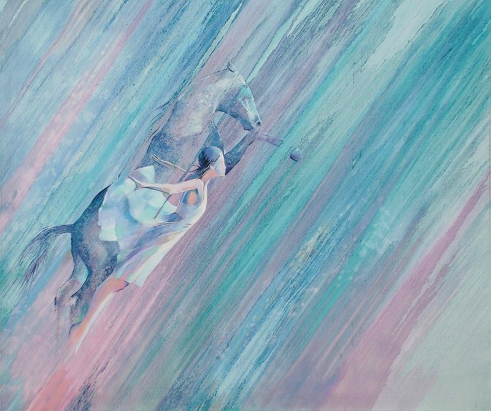

Жеңіс Какенович

Толығырақ:
т. 1956, Қазақстан, Алматы

Жеңіс Какенович, Шөл Миражы, 2019, 243 см x 183 см, Май және акрил кенепте.
Жеңіс Какенович: Қазіргі заманғы қазақ өнерінің шебері
Жеңіс Какеновичтің өнері көбінесе Қазақстанның табиғи ландшафттары мен қазіргі заман арасындағы байланысты зерттейді. Оның түстерді және текстураларды шебер қолдануы Орталық Азиядағы тыныш табиғаттың сұлулығын және өмірдің қиындығын айқындайды.
Какеновичтің картиналарында көбінесе жылы шөл дала түстері, абстрактілі пішіндер және дәстүрлі қазақ символдары мен заманауи техникалардың араласуы кездеседі.